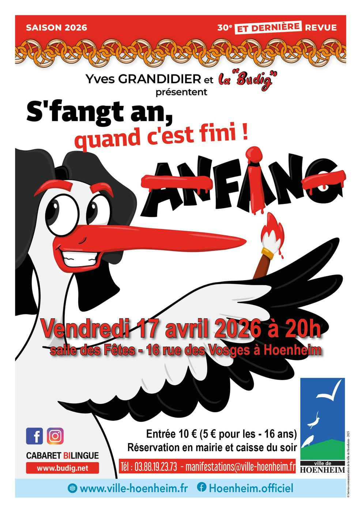

- Cet événement est terminé
Cabaret La Budig – S’fangt an quand c’est fini !
17 avril à 8 h 00 min - 17 h 00 min
Navigation de l'événement

📅 Vendredi 17 avril 2026
🕗 20h00
📍 Salle des Fêtes de Hoenheim
Après 30 ans de succès, le célèbre cabaret alsacien La Budig fait étape à Hoenheim pour présenter, une dernière fois, sa 30ᵉ et ultime revue 2026 :
S’fangt an quand c’est fini !
Depuis 1995, Yves Grandidier & La Budig ont conquis près de 130 000 spectateurs à travers plus de 600 représentations en Alsace, en Moselle, à Paris et jusqu’à Stuttgart.
Leur marque de fabrique : un cabaret bilingue, mêlant dialecte alsacien et français, humour, satire et émotion.
Un cabaret ancré dans l’Alsace
La Budig (la Boutique) est à la fois :
- le lieu où circulent rumeurs et événements régionaux,
- l’atelier de l’artisan,
- et surtout le bazar où s’accumule le Krimbel du quotidien et de la vie politique alsacienne.
Depuis trois décennies, la troupe passe en revue l’actualité régionale et les petits travers des Alsaciens, à travers des sketchs et chansons pour rire de tout… et surtout de nous-mêmes.
Denn lache esch gsund !
(Rire, c’est bon pour la santé)
Une dernière tournée à ne pas manquer
Avec S’fangt an quand c’est fini !, La Budig propose son dernier déstockage d’humour, sans jamais brader le particularisme du dialecte.
Un spectacle vivant, fin et généreux, destiné aussi bien aux francophones avertis qu’aux dialectophones confirmés.
Distribution
Avec : Dominique Baumgarten, Anaëlle Fargeas, Clément Garrec, Yves Grandidier, Virginie Gross, Michel Krieger, Roger Roth et au piano : Matthieu Spehner
Tarifs & réservations
- Entrée : 10 €
- 5 € pour les moins de 16 ans
- Réservation en mairie et caisse du soir
📞 Tél. : 03 88 19 23 73
📧 manifestations@ville-hoenheim.fr